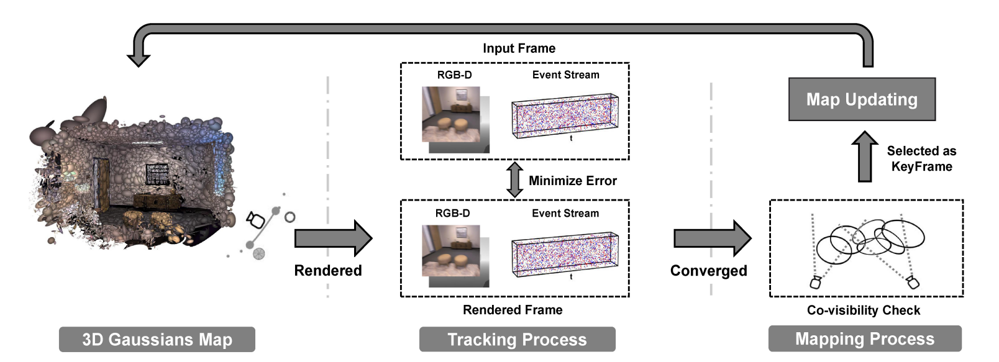
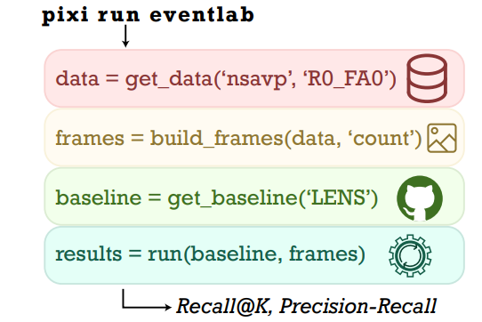
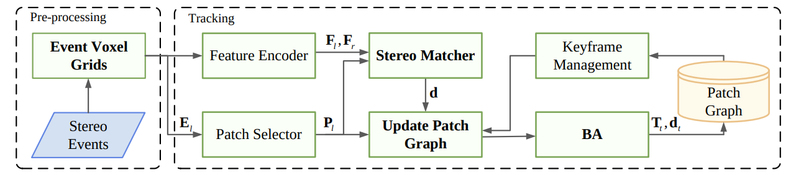
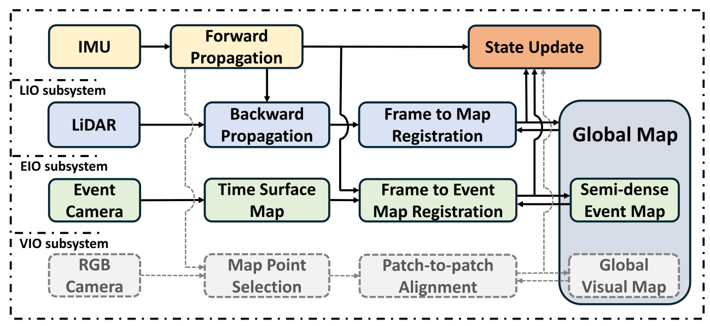
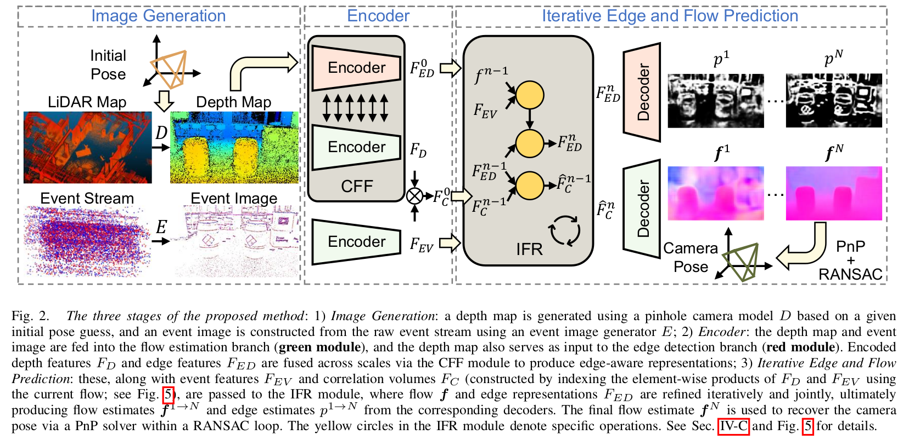
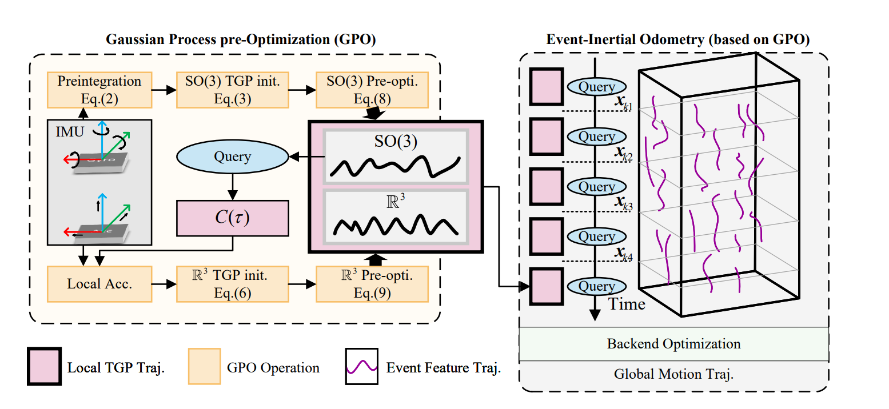
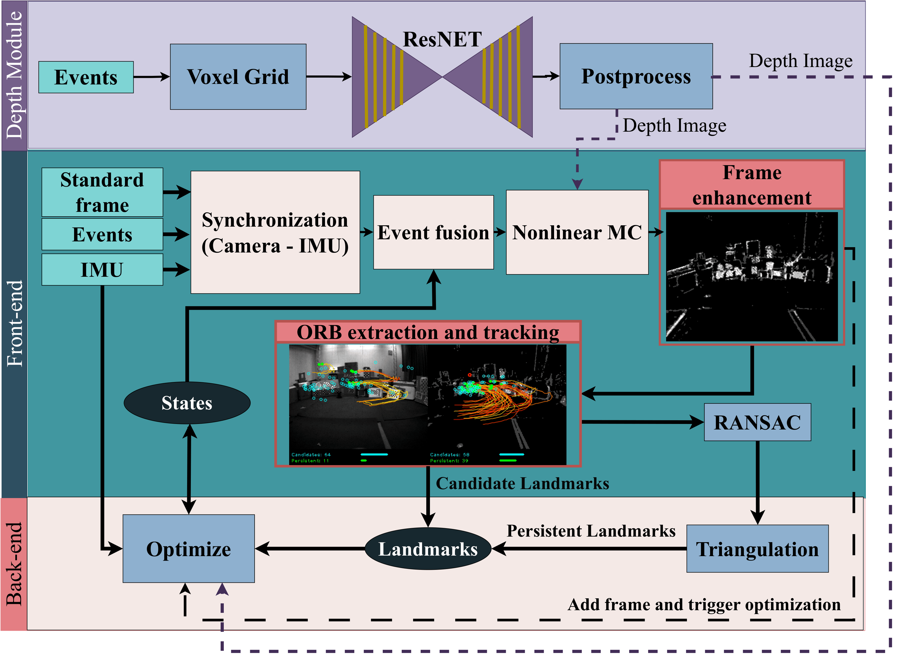

1. Quick Overview Table
2. Paper Summaries & Key Takeaways
1. EGS-SLAM: RGB-D Gaussian Splatting SLAM with Events
Hybrid
Novelty: The first E-RGB-D framework integrating event streams, RGB, and depth into 3D Gaussian Splatting SLAM. It explicitly models continuous camera trajectories during exposure and introduces a learnable Camera Response Function (CRF) to align HDR events with LDR images. A novel "no-event loss" is also proposed to suppress ringing artifacts.
Performance & Real-Time Applicability: Achieves a massive reduction in tracking error (ATE drops by ~42% on synthetic and ~47% on real data) and boosts reconstruction PSNR from 23.32dB to 27.62dB. While it operates online, it runs at 0.55 FPS, making it significantly slower than real-time requirements.
Advantages
Highly robust to severe motion blur; produces incredibly sharp, photorealistic 3D maps where classical methods fail.
Disadvantages
Computationally heavy due to multiple rendering cycles (0.55 FPS). Strictly requires depth sensors (RGB-D) and lacks a monocular setup.
2. Event-based Motion & Appearance Fusion for 6D Object Pose Tracking
Learning-Free / HybridNovelty: Shifting focus from camera localization to object tracking, this work proposes a learning-free method for 6D object pose tracking. It uniquely fuses motion and appearance by first propagating the object's pose using 6D velocity derived from event-based optical flow, and then correcting this pose using a template-based local appearance matching module.
Performance & Applicability: By avoiding heavy deep neural networks, this method is highly applicable for low-latency, real-time robotic manipulation tasks in industrial or home settings. It performs on par with current state-of-the-art methods but demonstrates superior performance specifically when tracking fast-moving objects, capitalizing on the high temporal resolution of event cameras.
Advantages
Learning-free architecture ensures high update rates without requiring massive training datasets or heavy GPU inference. The dual approach of continuous optical flow for speed and template matching for drift correction ensures robust tracking under dynamic conditions.
Disadvantages
The reliance on a template-based pose correction module implies a dependency on known 3D models or templates of the tracked objects, potentially limiting its use on novel or highly deformable items.
3. Event-LAB: Standardized Evaluation of Neuromorphic Localization
Standard / Benchmark
Novelty: As event-based localization research rapidly expands, comparing methods has become a nightmare of conflicting dependencies and fragmented data formats. Event-LAB proposes a unified framework that solves this "dependency hell." Utilizing the Pixi package manager, it enables single-command installation and execution of various SLAM and Visual Place Recognition (VPR) methodologies across multiple datasets using standardized interfaces.
Performance & Applicability: Rather than introducing new state-estimation math, its performance is measured by its utility to researchers. It successfully standardizes evaluation pipelines on major datasets (e.g., VECtor, Brisbane-Event-VPR) and integrates tools like evo to systematically visualize and analyze trajectory performance. It is a highly applicable, indispensable tool for ensuring reproducible research.
Advantages
A massive time-saver for the neuromorphic community. By streamlining package dependencies and dataset formats, it guarantees fair, reliable, and reproducible comparisons between competing algorithms.
Disadvantages
It is purely an evaluation suite, not a novel mapping or tracking algorithm itself. It relies entirely on the capabilities of the underlying SLAM methods integrated into its pipeline.
4. MotionGS-SLAM: Event-Modulated Gaussian Splatting
HybridNovelty: Instead of treating motion blur as an inverse problem (trying to "deblur" degraded images), this work introduces a paradigm shift by modeling blur formation as a generative forward problem within the rendering pipeline. It utilizes a novel event-modulated Gaussian kernel with dual mechanics: Spatial modulation (stretching isotropic dots into motion-aligned elliptical strokes based on event cues) and Temporal modulation (adapting exposure sampling density using local velocity).
Performance & Applicability: Authors claim significant improvements over SOTA in both trajectory accuracy and map quality under severe high-motion conditions. Since the full text is unreleased, exact FPS, hardware requirements, and real-time execution capabilities remain unknown.
Advantages
A brilliant physics-based approach. Jointly optimizing camera trajectories and 3D scene geometry by physically mimicking blur directly inside the 3DGS rasterizer avoids the pitfalls of classical deblurring networks.
Disadvantages
Computational overhead is a massive question mark. Dynamically modulating and anisotropically stretching Gaussians for every frame's exposure integral could be too resource-heavy for strict real-time robotic deployment.
5. ED-SLAM: Event-Depth Gaussian Splatting SLAM
HybridNovelty: Most existing event-based Gaussian Splatting methods assume known camera poses or fail during extended operations. This paper introduces a novel patch-based event-depth tracking algorithm that seamlessly integrates into the 3DGS mapping pipeline, eliminating the need for ground-truth camera priors and ensuring stable tracking over long durations.
Performance & Applicability: Validated on both synthetic and real-world datasets, the authors report high-accuracy pose estimation and high-fidelity 3D reconstructions. By successfully handling long event streams without losing track, it proves highly applicable for continuous autonomous robotic navigation tasks.
Advantages
A true SLAM system that solves the pose-prior dependency in event-GS networks. The patch-based tracking approach significantly improves robustness over long, continuous event streams where other implicit methods usually drift or crash.
Disadvantages
Similar to EGS-SLAM, it relies heavily on dense depth data, preventing its use in pure monocular event setups. Tracking directly on event-depth patches within a 3DGS loop might still carry a substantial computational burden.
6. Deep Visual Odometry for Stereo Event Cameras (Stereo-DEVO)
Learning-based
Novelty: This work introduces Stereo-DEVO, effectively eliminating the monocular scale ambiguity of the original DEVO network. It proposes a novel, highly efficient static-stereo association strategy for sparse depth estimation on event voxel grids. This is then tightly integrated into a Bundle Adjustment (BA) scheme alongside recurrent optical flow predictions.
Performance & Real-Time Applicability: Refactored in ROS, it achieves real-time execution on VGA resolution data (~10 Hz on a desktop RTX 3090, ~5 Hz on a laptop). It achieves state-of-the-art results over ESVO2 and DEIO, particularly succeeding in a 2.5km nighttime driving sequence with a mere 4.52m error where classical methods completely fail.
Advantages
Unprecedented robustness in large-scale, nighttime HDR environments and under aggressive motion (e.g., drones flying at 3.9m/s). The new depth extraction module is incredibly lightweight (~0.46ms).
Disadvantages
Heavy reliance on CUDA operations severely throttles its performance on low-power embedded edge devices (e.g., drops to ~1 Hz on Jetson Orin NX). Far-range scene reconstruction remains impossible due to event sparsity.
7. FAST-LIEO: Fast and Real-Time Lidar-Inertial-Event-Visual Odometry
Standard / Filter-Based
Novelty: FAST-LIEO is an ultra-robust sensor fusion framework that tightly couples LiDAR, IMU, event cameras, and standard RGB cameras using an Iterated Kalman Filter (ESIKF). Bypassing expensive feature extraction, it proposes a novel Event-Inertial Odometry (EIO) subsystem that builds a semi-dense event map leveraging LiDAR geometries and tracks the state by directly aligning negative Time Surface (TS) maps.
Performance & Applicability: Designed from the ground up for strict real-time execution. It dominates classical methods (like FAST-LIO2 or R3LIVE) under extreme edge cases, completely preventing initialization failures at >20 m/s tunnel entries and easily surviving total LiDAR degeneration (e.g., facing featureless walls closely) by falling back on high-dynamic-range event measurements.
Advantages
Exceptional resilience. Capable of surviving scenarios where other sensors go blind (HDR conditions, aggressive motions, or LiDAR structure-loss). Direct alignment without feature matching makes it extremely CPU efficient.
Disadvantages
Simultaneous LiDAR degeneration and texture-less environments will still break the system. Using high-resolution event cameras at a 60Hz TS rate creates computing bottlenecks, sacrificing its "fast" nature.
8. LEAR: Learning Edge-Aware Representations for Event-Lidar Localization
Learning-based
Novelty: Aligning asynchronous sparse events with dense LiDAR maps is highly ill-posed. LEAR solves this modality gap through a dual-task learning framework that jointly estimates edge structures and dense event-depth flow fields. It uses a cross-modal fusion mechanism to inject modality-invariant geometric edge cues directly into the motion representations, enforcing mutual consistency.
Performance & Applicability: The network's inference time is roughly 45 ms per sample (~22 FPS), making it highly applicable for near real-time deployment. Utilizing Perspective-n-Point (PnP) solvers for 6-DoF pose recovery, it significantly outperforms prior state-of-the-art methods across challenging datasets like M3ED, DSEC, and VECtor.
Advantages
Exceptional cross-modal alignment. By treating edge detection not as a post-hoc aid but as a core coupled task, it achieves extreme robustness in visually degraded, GPS-denied, or high-speed environments where standard vision fails.
Disadvantages
It is purely a localization framework, meaning it inherently relies on the presence of a pre-built, highly accurate dense LiDAR map of the environment. It does not perform simultaneous mapping (not a full SLAM).
9. Continuous Gaussian Process Pre-Optimization for Async Event-Inertial Odometry
Standard / Mathematical
Novelty: Traditional VIO systems force asynchronous event streams into discrete-time frames (like 30Hz images) to match standard IMU preintegration methods. This paper eliminates that bottleneck by introducing a continuous-time pre-optimization framework (GPO) based on Gaussian Process regression. It models IMU states continuously, allowing perfectly aligned, zero-loss fusion with event data at the exact microsecond any event is asynchronously triggered.
Performance & Applicability: Designed for tightly-coupled fusion in high-speed, HDR conditions. Using closed-form solutions for Gaussian Process regression, it maintains a manageable computational load suitable for real-world robotics. It demonstrates smoother ego-motion estimation and lower trajectory errors compared to standard discrete-time IMU preintegration methods (like ESVIO).
Advantages
A theoretically beautiful approach to sensor fusion. By treating time as a continuous variable, it fully unleashes the raw, asynchronous power of event cameras without artificial framing delays or synchronization errors.
Disadvantages
Continuous-time optimization matrices are significantly more complex to formulate and debug than standard discrete filters. Additionally, this is an Odometry system lacking backend Global Mapping or Loop Closure mechanisms.
10. Edged-VSLAM My Work
Hybrid / Edge-Driven
Novelty: Edged-USLAM introduces a novel framework that fundamentally integrates asynchronous event cameras with edge computing capabilities. It models raw event streams into robust event-based edge images, driving the entire localization and mapping pipeline strictly through these resilient geometric edge constraints rather than full photometric intensity.
Performance & Applicability: Designed specifically for high-speed autonomy. By pushing processing closer to the sensor (edge computing), it achieves sub-millisecond motion tracking. It is highly applicable to autonomous drones and agile ground vehicles operating in extreme high-dynamic-range (HDR) environments.
Advantages
Ultra-low latency tracking. The edge-driven approach makes the system virtually immune to standard visual degradations like motion blur, extreme under-exposure, or sudden glare.
Disadvantages
Being a standard edge/geometry-based system, it produces sparser structural maps compared to the dense, photorealistic reconstructions of newer 3DGS or learning-based NeRF approaches.